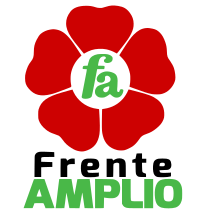

PARTIDOS POLITICOS POSTULANTES A LA PRESIDENCIA 2021

Acción Popular
Fundado en 1956.
Acción Popular
Creado por Fernando Belaunde en el año 1956, ahora, el partido busca regresar al poder con una nueva propuesta; si desea conocer los detalles, vallamos
ir

Fuerza Popular
Fundado en 2010.
Fuerza Popular
Creado por Keiko Fujimori en el año 2010, ahora, el partido busca llegar al poder con una nueva propuesta; si desea conocer los detalles, vallamos.
ir
Alianza para el Progreso
Fundado en 2001.
Alianza para el Progreso
Creado por Cesar Acuña en el año 2001, ahora, el partido busca llegar al poder con una nueva propuesta; si desea conocer los detalles, vallamos.
ir

Avanza País
Fundado en 2000
Avanza País
Creado en el año 2000, ahora, el partido dirigido por Pedro Cenas busca llegar al poder con una nueva propuesta; si desea conocer los detalles, vallamos.
ir
Democracia Directa
Fundado en 2013
Democracia Directa
Creado por Andrés Avelino Alcántara Paredes en el año 2013, ahora, el partido busca llegar al poder con una nueva propuesta; si desea conocer los detalles, vallamos.
ir
El Frente Amplio
Fundado en 2013
El Frente Amplio
Creado en el año 2013, ahora, el partido dirigido por Marco Arana Zegarra busca llegar al poder con una nueva propuesta; si desea conocer los detalles, vallamos.
ir
FREPAP
Fundado en 1989
FREPAP
Creado por Ezequiel Ataucusi Gamonal en el año 1989, ahora, el partido busca llegar al poder con una nueva propuesta; si desea conocer los detalles, vallamos.
ir

Juntos por el Perú
Fundado en 2017
Juntos por el Perú
Creado en el año 2017, ahora, el partido dirigido por Roberto Sánchez Palomino busca llegar al poder con su propuesta; si desea conocer los detalles, vallamos.
ir
Partido Aprista Peruano
Fundado en 1930
Partido Aprista Peruano
Creado por Víctor Raúl Haya de la Torre en el año 1930 en Perú, ahora, el partido busca regresar al poder con una nueva propuesta; si desea conocer los detalles, vallamos.
ir
Somos Perú
Fundado en 1997
Somos Perú
Creado por Alberto Andrade Carmona en el año 1930, ahora, el partido busca llegar al poder con una nueva propuesta; si desea conocer los detalles, vallamos.
ir
Frente de la Esperanza
Fundado en 2020
Frente de la Esperanza
Creado por Fernando Olivera en el año 2020, ahora, el partido busca llegar al poder con su propuesta; si desea conocer los detalles, vallamos.
ir
Partido Morado
Fundado en 2017
Partido Morado
Creado por Julio Guzmán en el año 2017, ahora, el partido busca llegar al poder con su propuesta; si desea conocer los detalles, vallamos.
ir
Partido Nacionalista Peruano
Fundado en 2005
Partido Nacionalista P.
Creado por Ollanta Humala Tasso en el año 2005, ahora, el partido busca llegar al poder con su propuesta; si desea conocer los detalles, vallamos.
ir
Contigo
Fundado en 2019
Contigo
Creado por Gilbert Violeta en el año 2019, ahora, el partido busca llegar al poder con su propuesta; si desea conocer los detalles, vallamos.
ir
Perú Libre
Fundado en 2016
Perú Libre
Creado por Vladimir Cerrón en el año 2016, ahora, el partido busca llegar al poder con su propuesta; si desea conocer los detalles, vallamos.
ir

Partido Popular Cristiano
Fundado en 1966
Partido Popular Cristiano
Creado en el año 1966, ahora, el partido dirigido por Alberto Beingolea busca llegar al poder con su nueva propuesta; si desea conocer los detalles, vallamos.
ir
Perú Nación
Fundado en 2015
Perú Nación
Creado por Francisco Diez Canseco en el año 2015, ahora, el partido busca llegar al poder con su nueva propuesta; si desea conocer los detalles, vallamos.
ir
Perú Patria Segura
Fundado en 2013
Perú Patria Segura
Creado por Andres Reggiardo en el año 2013, ahora, el partido busca llegar al poder con su nueva propuesta; si desea conocer los detalles, vallamos.
ir
Podemos Perú
Fundado en 2018
Podemos Perú
Creado por José Luna Gálvez en el año 2018, ahora, el partido busca llegar al poder con su propuesta; si desea conocer los detalles, vallamos.
ir
Renacimiento Unido Nacional
Fundado en 1992
Renacimiento Unido N.
Creado por Ciro Alfredo Gálvez en el año 1992, ahora, el partido busca llegar al poder con su nueva propuesta; si desea conocer los detalles, vallamos.
ir
Restauración Nacional
Fundado en 2005
Restauración Nacional
Creado por Humberto Lay Sun en el año 2005, ahora, el partido busca llegar al poder con su nueva propuesta; si desea conocer los detalles, vallamos.
ir
Solidaridad Nacional
Fundado en 1998
Solidaridad Nacional
Creado por Luis Castañeda Lossio en el año 1998, ahora, el partido busca llegar al poder con su nueva propuesta; si desea conocer los detalles, vallamos.
ir
Todos por el Perú
Fundado en 2002
Todos por el Perú
Creado en el año 2002, ahora, el partido dirigido por Aureo Zegarra Pinedo busca llegar al poder con su nueva propuesta; si desea conocer los detalles, vallamos.
ir
Unión por el Perú
Fundado en 1994
Unión por el Perú
Creado por Javier Pérez de Cuéllar en el año 1994, ahora, el partido busca llegar al poder con su nueva propuesta; si desea conocer los detalles, vallamos.
ir